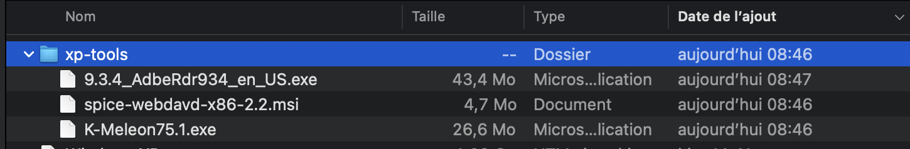
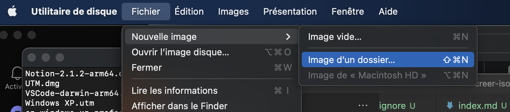
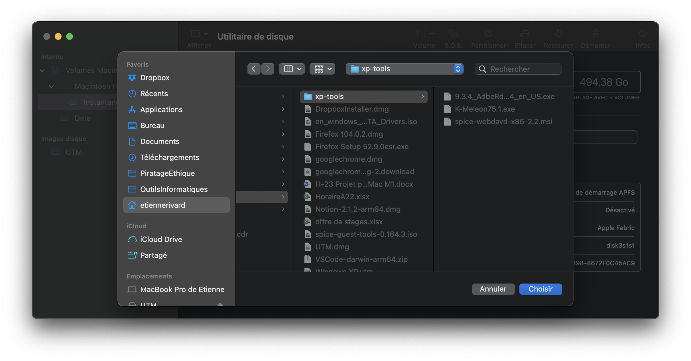
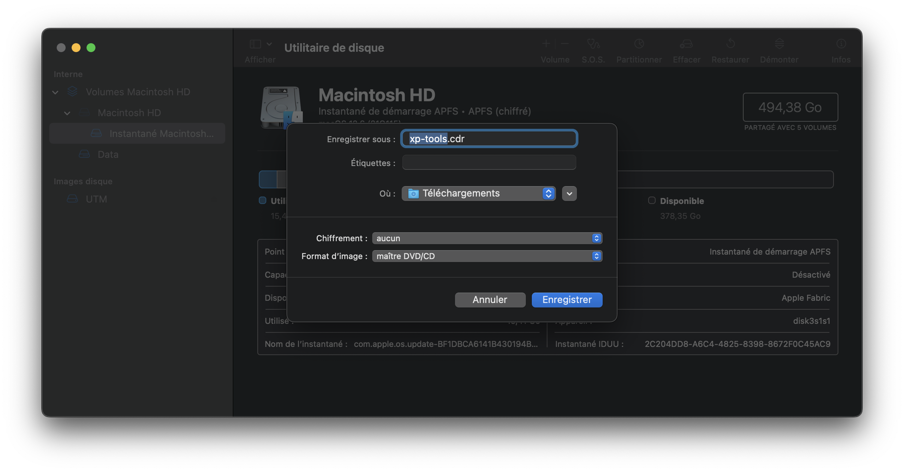
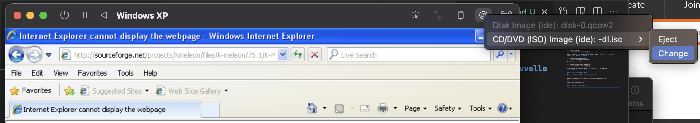
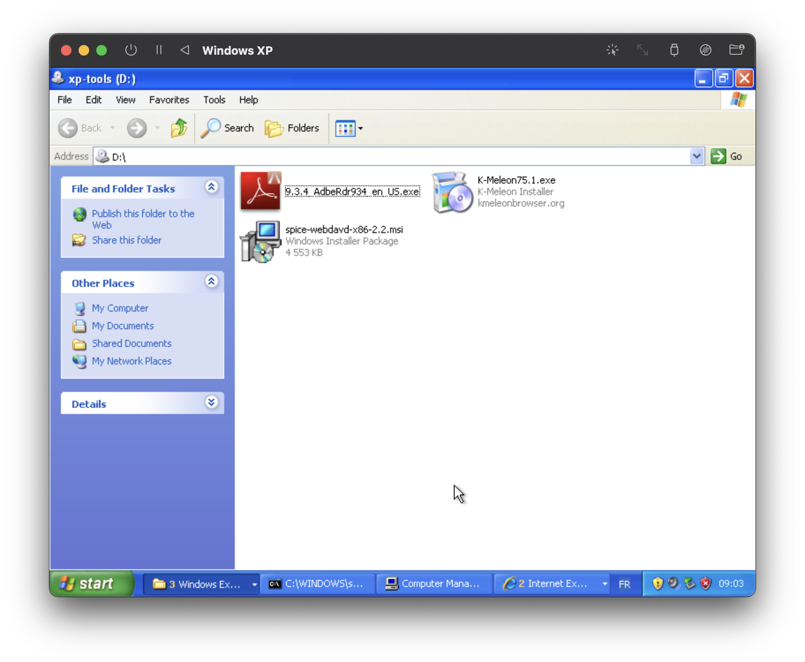

Créer un ISO pour transférer des fichiers dans Windows XP sur UTM
UTM offre la possibilité de charger des ISO dans le lecteur DVD virtuel de Windows XP. Lorsque vous avez des fichiers à transférer, créer un ISO sur MacOs reste la manière la plus facile de faire.
1 - Créer un CDR avec l'utilitaire de disque
Mettre les fichiers de votre futur ISO dans un dossier.
Dossier

Dans l'utilitaire de disque, aller dans le menu Fichier -> Nouvelle image -> Image d'un dossier....
Image d'un dossier

Sélectionner le dossier.
Sélectionner le dossier

Sélectionner le format d'image Maître DVD/CD. Cliquer sur Enregistrer.
Créer le CDR

2 - Créer un ISO avec le CDR
Dans le terminal, entrer la commande suivante :
hdiutil makehybrid -iso -joliet -o xp-tools.iso xp-tools.cdr
Le ISO est maintenant créé.
3 - Charger le ISO dans UTM
Dans UTM, cliquer sur l'icône d'un DVD en haut à droite, puis sélectionner Change pour utiliser votre nouvel ISO.
Changer le ISO de UTM

4 - Utiliser les fichiers dans Windows XP
Les fichiers sont désormaits dans Windows XP :
Fichers dans le lecteur DVD de Windows XP
